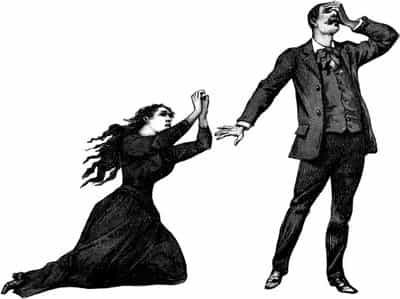

< < < Back
The Apology That Will Never Be Delivered – Return Of Kings
I’m going to kick a dead horse and pound my chest a bit here. Elliot Rodger. If you’re sick from hearing about that guy I won’t blame you for clicking out of here, but this article isn’t going to be about the sexually frustrated man who went on a shooting spree. It’s going to be about me.
Back in December 2013, a young man named Karl Halverson went to his school and shot a very pretty young woman named Claire Davis before he committed. I wrote a controversial article (read here) about what I theorized was the reason for Karl’s murder. Essentially I wrote, and still believe, that Karl killed Claire because he was sexually frustrated; mostly as a result of selfish women who (based on their looks and personality) have their standards set unrealistically high, denying mid-tier men like Karl sex and relationships while they become debased genetic toilets for higher tier men. A lot of people on the internet hated me for saying that. My e-mail was flooded with anger and malware, numerous sites fisked my article and proclaimed me the worst thing ever.
Five months later, what happens? My theory that sexless men go crazy is proven beyond a doubt by Elliot Rodger (read here), who left numerous videos and a manifesto detailing how sexual frustration drove him over the edge. Undoubtedly violence by men against women, fuelled by male sexual frustration, happens on a larger scale than we believe. Most of the time, however, there is little evidence to prove so. Men just seem to go crazy one day and rape, hurt or kill women (often committing suicide afterward) for ‘no apparent reason’, despite the fact that it’s readily apparently many of these murders happened because men with no clue how to get it (or those who erroneously still believe being a nice guy and solid provider are still sexually attractive) were not receiving female attention. Some men are so deprived of a woman’s touch that just a hug is enough to have them smiling for weeks; blogger Heartiste provides us with this brief insight into the power a woman’s innocent touch had on Elliot Rodger:
Most unenlightened men who come to the Chateau to learn the ways of the crimson arts are first introduced to a steady diet of knowledge about psychosocial sex differences before the juicy game strategies are revealed.
“One time there was a gathering at his parents’ place and Elliot was his usual uncomfortable self.
I asked Peter if Elliot was ticklish. Peter said he was, so I encouraged a couple of women to tickle him and you know, that was the only time I saw Elliot express any kind of joy. It seemed that, at least for those moments, he was a normal kid.”
A woman’s touch is water to a parched man. Sad, sad Elliot. Game can save lives. But only for those willing to see.
Just being tickled by a girl was enough to make this murderous individual happy.
Lack of female interaction drives men crazy. I said this many months ago and received a storm of flak for it. But as is often the case here at Return Of Kings, we tell the harsh truth, we get lambasted for it, we’re proven right beyond a shadow of a guilt, and our critics refuse to acknowledge it. They do not even do something as simple as offering a grudging apology. Hell, I’d even take a sarcastic one!
I know I won’t get an apology. There’s no room for polite discourse when it comes to telling the Truth versus spreading the Lies. We at Return of Kings tell the truth and get crapped on for it. When we’re eventually proven right (not that we need to be) we still receive nothing for it. This says a lot about our critics. They are so classless, their platforms so razor thin and shaky, that they cannot even fire me an e-mail and say ‘Okay Billy, maybe you’re onto something… though you’re still mostly wrong and I still hate you you piece of crap’. No, they know once they acknowledge the truth it’s over. The veil is pulled back, the selfish ugliness of their agendas are revealed and they’re forced to face the fool staring back at them in the mirror.
I try to reply to every e-mail I receive, no matter how angry or crazy it may be. I do so with class and respect; these people, even if they are a critic, took their time to send me some correspondence. It’s only courteous to reply and acknowledge I’ve read their words, since they’ve read mine. Every so often I get some that are very personal. A few women with obvious problems and misplaced anger riled and raged at me, I answered, they answered, and six or seven e-mails later we’re friends. She may not necessarily accept my viewpoint, but she recognizes that all my vitriol and cruel language here on Return Of Kings is serving a higher purpose. A couple have even admitted that our correspondence helped them. And I will never use these e-mails as an article basis, even though I could easily be childish and truck them out and wave them at our critics faces, asking how many people they’ve helped live better lives. I keep my correspondence private because I respect my critics. I respect their right to their opinion (even though they’re wrong) and I have enough class not to have a laugh at their expense afterwards. I don’t need to be that petty.
I, and my fellow contributors, are trying to make the world a better place. We try to help men become better so they don’t have to suffer a miserable existence; which, by consequence, helps women have better lives as well. We try to entertain men who are already being who they desire to be. In a way we are a therapist’s couch, a place for men who have no other safe outlet for their thoughts to blow off some steam and acknowledge that no, they aren’t crazy, stuff is very wrong with the world and we give them tangible reasons as to why that is.
And we are right. We deal in truths, no matter how uncomfortable they may be. We are called misogynists but it just so happens to be a sad fact that the attitudes and actions of the modern western woman are fuelling a lot of male misery. We can’t help that. Were that not the case than we would simply be talking more about the other reasons why the world is such a messed up place for the modern man.
So I say to you, our treasured enemies: you don’t have to like us, but you should be classy and at least admit it when we’re right. So how about firing off that apology you owe me now? Show you’re the bigger person and grovel for forgiveness at my feet.
[email protected]

Read More: 10 Reasons Why You Should Live Without Apology


{kind=link}